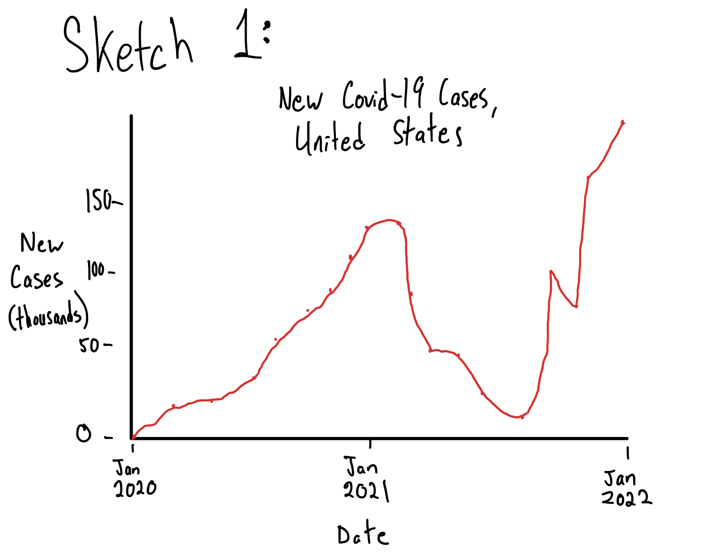
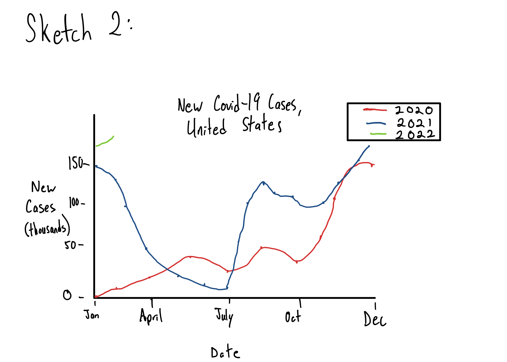
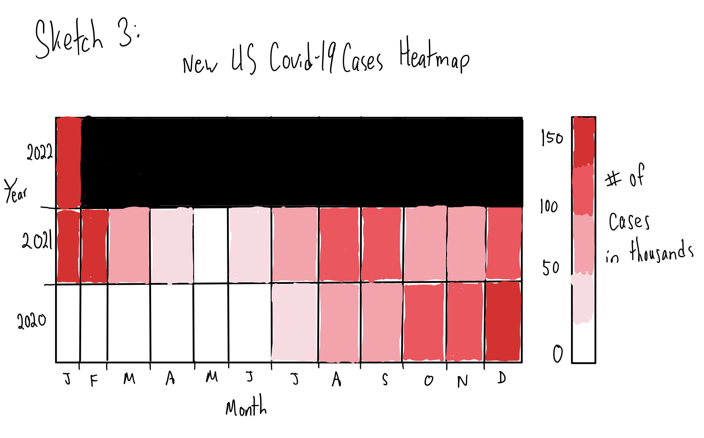
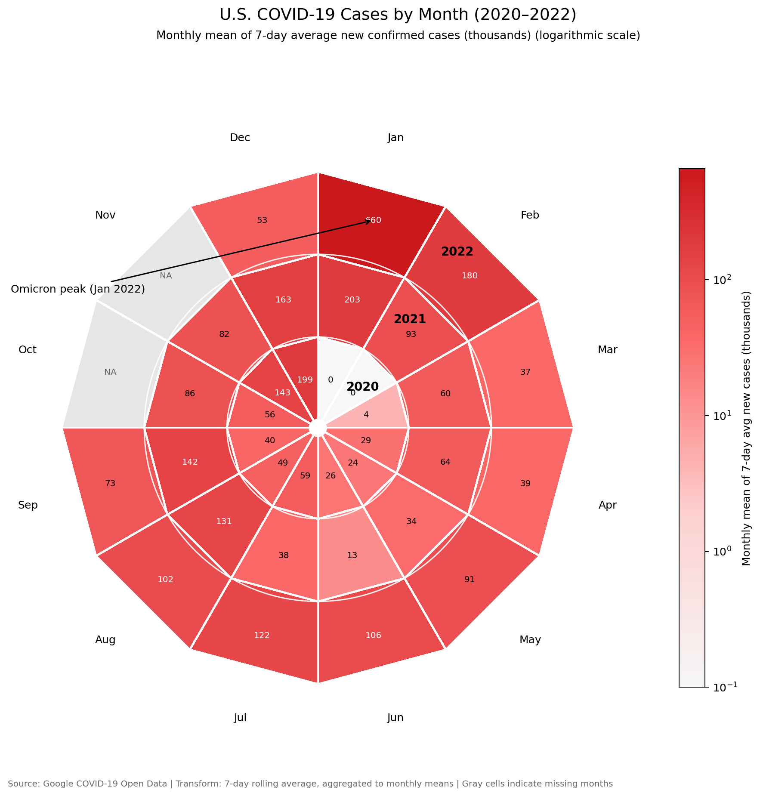

Reading & Critique

Insights about the data/visualization:
- The chart shows recurring COVID-19 waves across 2020, 2021, and early 2022, using a spiral to emphasize repetition over time.
- The Omicron surge in early 2022 is visually much larger than the earlier waves, especially compared with peaks in 2020 and 2021.
- There are visible rises and declines in multiple periods (including winter and summer/fall surges), but exact peak magnitudes and timing are hard to compare precisely.
Design Critique:
The spiral chart does a good job creating a strong first impression and making the Covid waves feel cyclical. It is visually memorable, and I can see why it worked well in a New York Times opinion piece where grabbing attention matters. The spiral format reinforces the idea that the pandemic came in recurring waves, and the large outward expansion near early 2022 makes the Omicron surge feel especially dramatic. The use of a 7-day average also helps smooth noise so the broader wave patterns are easier to follow.
That said, I do not think the spiral format is the clearest way to communicate the data. It emphasizes metaphor more than measurement. The chart may be trying to show the virus spiraling outward, but the actual data are waves that rise and fall over time, so the form does not fully match the pattern being shown. It is also difficult to compare exact magnitudes across years because values are encoded as radial distance instead of position on a standard axis, and there are very few clear numerical reference points. The chart is not immediately intuitive either because there is no obvious starting point, and the direction of time has to be inferred. Overall, the design is effective at creating a dramatic visual and highlighting recurrence, but it gives up some clarity and precision that would make the trends easier to interpret.
Visualization Sketches

Design Rationale for Sketch 1:
- I started with a basic line chart because my main critique of the spiral is that it sacrifices detail.
- This version makes time progression and case magnitude immediately readable.
- What worked is that the chart is much more intuitive and supports exact reading.
- What it loses is the cyclical feeling that the original spiral was trying to emphasize.
- In the next sketch, I wanted to add some detail through separated years.

Design Rationale for Sketch 2:
- I made this sketch to keep the recurring yearly structure from the original spiral chart, but in a format that is much easier to read.
- Plotting the years on the same month-based x-axis makes seasonality and timing easier to compare directly than the spiral layout.
- Using a standard y-axis for cases fixes one of my biggest critiques of the original. What worked well is that the repeated wave patterns across years are still visible, but the peaks are much easier to compare.
- What did not work as well is that overlapping lines can get a little cluttered, especially when different years pass through similar values.
- This sketch made me want to try a design that preserves the year-by-year comparison but reduces overlap even more.

Design Rationale for Sketch 3:
- I made this sketch to test a non-line-chart design that still preserves the seasonal and year-to-year structure from the original.
- A heatmap makes the reading order much clearer than the spiral because time runs left to right by month and years are separated into rows.
- This design is good for quickly spotting timing patterns, like when cases were relatively low versus when they surged across different years.
- What worked well is that the chart is easy to scan and compare across years, especially for seeing broad seasonal trends.
- What did not work as well is that the heatmap hides the detailed shape of each wave, and exact values are less precise unless the color scale is carefully designed.
Final Visualization Design

My final visualization is a spiral heatmap that keeps the cyclical layout of the original New York Times chart, but changes the way case magnitude is encoded so the chart is easier to interpret. The main message I wanted to communicate is that COVID waves repeated seasonally across 2020 to 2022, but the Omicron period in early 2022 was far more intense than earlier waves. I kept the circular monthly layout because it preserves the recurring calendar structure, which was one of the strongest parts of the original design, but I replaced radial distance as the magnitude encoding with color intensity. In this version, each tile represents a month within a year ring, and the color shows the monthly mean of the 7-day average new cases (in thousands). I also used a logarithmic color scale so lower and mid-range months are still distinguishable while preserving the visual contrast needed to show how extreme Omicron was. I added direct value labels in each cell, year labels in the rings, month labels around the outside, a color legend, and an Omicron annotation so the chart can be interpreted without needing the writeup.
This redesign addresses several of the critiques I raised about the original spiral chart, but it also helped me see some tradeoffs more clearly. The biggest improvement is that magnitude is no longer encoded by distance from the center, which makes the chart easier to read and compare. Time progression is also clearer because the months are explicitly labeled and the year rings are separated. At the same time, keeping a spiral format still introduces some complexity compared with a standard line chart, especially for comparing exact values across non-adjacent months. That is why I added the numeric labels and colorbar to support precise reading. The redesign process helped me realize that the original chart was not wrong so much as optimized for a different goal. It was designed to be dramatic and editorial, while my version tries to preserve the cyclical metaphor but improve measurement and readability. I still give up some detail in wave shape because I aggregated to monthly values, but that was a deliberate tradeoff to make the seasonal pattern and year-to-year comparisons easier to see.
AI Assistance Disclosure
AI Assistance Disclosure: This visualization was created with assistance from GitHub Copilot (Claude Sonnet 4.5). The AI helped with:
- Code refactoring and organization into modular functions
- Adding documentation and type hints
- Implementing a logarithmic color scale to handle the Omicron surge outlier
- Debugging colorbar range issues
- Improving code readability and maintainability
All design decisions, data interpretation, and final code were reviewed and approved by the author.
Another note: GitHub doesn't have an option to share the chat history unfortunately.